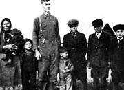
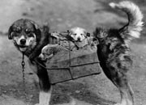
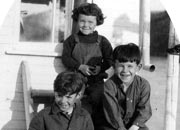
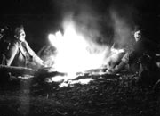
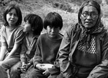
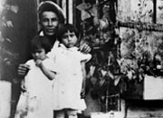
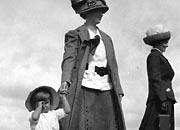

In small and remote places, especially with a harsh climate and geography, relationships are all important. People depend on one another. They rely on family and form close bonds with their neighbours and within their communities.
Traditionally, First Nations people lived in small family groups. They travelled long distances every year, sometimes joining with other groups for fishing or hunting. Family relationships were vitally important; children learned from parents, grandparents, and other relatives. Adults and children helped one another with the daily tasks of living.
The gold rush brought thousands of people north, in many cases, away from their families. The newcomers established families and relationships in their new homes. Women who came north as teachers or nurses married men they met there; some miners and traders married First Nations women; single men and women found companionship and family in the Yukon’s closely-knit communities.
People had ceremonies which celebrated the transitions in life: birth, puberty, marriage and death. Family members and friends cared for each other during sickness and worked together to raise the next generation.
Genealogy
The Yukon Archives has extensive records to help people undertaking family research, including mining records, gazetteers, professional listings, church records and voters lists, and Yukon First Nations sound recordings and other sources.
“This is why it’s very important to share and support, respect our younger people today. We need them, they need us.”
John Joe Kaye
Recollections: Oral History Project by students of Te'sek Gehtr'oonatum Zzeh Campus
Continue to Blessed is the spotRelationships and family
(Above) Mrs. Porter with Mary MacBride and Larry Porter on First Avenue, Whitehorse, 1926.
YA, MacBride Family collection, 82/342 #61
Eliza and Ira Van Bibber with ten of their children, n.d.
YA, Menzies collection #8699
A canine family, c.1943.
YA, Karman collection, 92/32 #3
Thomas, Mary Alice and William Drury, children of William and Lucy, on the Thistle, July 1927.
YA, Tidd collection #8407
Rene [Loulier], Bill Hare, Ted Sunderland and Irvin Ray at their campfire at the mouth of the Mayo River, October 5, 1923.
YA, Hare collection #6692
Sophie Isaac with greatgrandchildren Debbie, Walter and Jimmy Workman, c.1970.
YA, Harrington collection, 79/27 #155
Jimmy Woods and his nieces Mary (Roberts) Bergman and Sarah (Roberts) DeWolfe, at his house in Moosehide, n.d.
YA, Kates collection #5787
Dorothy Phelps, Hanna Livingston-Phelps and Mrs. MacPherson, c.1912.
YA, Scott/Phelps collection, 89/31 #16